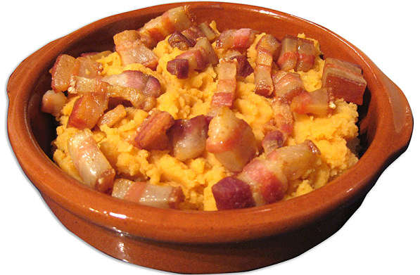

| Autor: Alejandro Rivera Casaseca Fecha:20/01/2021 |
Salamanca |
||||||||
| Inicio |
|
||||||||
| Burgos | |||||||||
| León | |||||||||
| Palencia | |||||||||
| Ávila | |||||||||
| Segovia | |||||||||
| Soria | |||||||||
| Valladolid | |||||||||
| Zamora | |||||||||
| Pagina de contacto | |||||||||
LocalizaciónLocalidadesGrandes ciudades : Salamanca, Santa Marta de Tormes, Béjar, Ciudad Rodrigo, Villamayor, Carbajosa de la Sagrada, Villares de la Reina, Peñaranda de Bracamonte, Guijuelo, Alba de Tormes, Cabrerizos, Terradillos, Castellanos de Moriscos, Vitigudino, Doñinos de Salamanca, Aldeatejada, Ledesma, Lumbrales, Villoria, Monterrubio de Armuña, La Fuente de San Esteban, Aldeadávila de la Ribera, Carrascal de Barregas, Pelabravo, Calvarrasa de Abajo, Fuentes de Oñoro, La Alberca, San Cristóbal de la Cuesta, Macotera, Cantalapiedra, Linares de Riofrío, Babilafuente, Candelario, Cantalpino, Sancti-Spíritus, Villarino de los Aires, Tamames, Villavieja de Yeltes, Villoruela y Calzada de Valdunciel. Mas informaciónGeografíaLa provincia de Salamanca ocupa una superficie geográfica de 12 349,06 km², lo que la convierte en la tercera provincia de Castilla y León por extensión después de las de León y Burgos y en la decimosexta de España. Limita con la provincia de Zamora al norte, con la provincia de Valladolid al noreste, con la provincia de Ávila al este, con Extremadura al sur y con Portugal al oeste. Volver al principioHistoriaEl origen de la ciudad es un pequeño asentamiento, en la primera edad del hierro, hace ya 2700 años. Una pequeña tribu vivía en la zona del cerro de San Vicente, junto al río Tormes. El año 220 a.C. el General del ejército cartaginense Aníbal conquista la tribu a su paso por la conquista de Hispania. Por entonces la zona era llamada Helmántica. Tras ésto, los romanos le arrebataron la zona a los cartaginenses, cambiando el nombre a la ciudad y llamándola Salmantica. Entonces empezó a cobrar importancia la ciudad por estar en la vía de la Plata que se comunicaba, Mérida, capital de la península ibérica, con las provincias del norte. Tras la caída de Roma pasaron por la ciudad por visigodos y musulmanes, que la conquistaron en el año 712. La ciudad quedó prácticamente vacía en su época musulmana al ser una zona fronteriza entre el territorio cristiano y musulmán. Pero la reconquista cristiana llega con la batalla de Simancas en el 931 y se repuebla de nuevo la ciudad. Salamanca comenzó a crecer a gran velocidad bajo el reinado de Alfonso VI en el siglo XI que mandó a construir la Catedral Vieja, y junto a ello escuelas catedralicias, que serían el germen de la creación de la Universidad de Salamanca, siendo la primera del país en el año 1218. En la Edad Moderna, Salamanca se unió al movimiento de las Comunidades de Castilla, la conocida como Revuelta de los Comuneros, que se encontraban en contra de la nueva entrega de impuestos de Carlos I. Las ciudades que se alzaron contra el Rey fueron derrotadas y, a Salamanca como castigo, se ordenó destruir las torres de los palacios de la ciudad de familias nobles que se pusieron en contra. El siglo XVI aun así fue una época de esplendor para esta ciudad, debido a que alcanzó prestigio como ciudad Universitaria a nivel de europeo y acogía al año 6500 estudiantes que suponía el 25% de la población. En el siglo XVIII se produce un gran renacimiento económico, se termina su Catedral Nueva y se construye la plaza en 1729. Tras el terremoto de Lisboa en 1755 que asoló la ciudad también tuvieron que ser reconstruidos muchos edificios. La llegada de los Borbones influyó también en la mejora de la Universidad. Durante la Guerra de Independencia contra las tropas francesas, la ciudad sufrió graves daños durante esta ocupación que duro 2 años entre 1810 y 1812. 10 años después cuando se crea la Provincia de Salamanca y se convierte en la capital de Castilla y León, se revitaliza económicamente la ciudad y se renueva urbanísticamente. La Guerra civil ya en el siglo XX crea un nuevo paréntesis en su historia ya que fue sede del cuartel general de Franco y el palacio episcopal su residencia principal. Ya en la posguerra se crea aquí un gran archivo general de la guerra civil española. En 1940 el papa Pio XII funda la Universidad Pontificia de Salamanca y en 1988 se reconoce a la ciudad como Ciudad Patrimonio de la Humanidad por su gran importancia histórica y artística. Volver al principioCulturaEn Salamanca hay muchas actividades culturales para hacer, como visitar monumentos, iglesias, sus numerosos municipios, mencionados antes, etc. En el siguiente enlace, podrá encontrar todas las actividades culturales que podrá realizar en su visita a Salamanca. Actividades culturales de Ávila Volver al principio NaturalezaEstos son los 10 mejores parajes naturales de la provincia de Salamanca: Parque Natural Arribes del Duero, Huerto de Calixto y Melibea, Ruta del Camino del Agua, Parque Natural de las Batuecas-Sierra de Francia, Caballos de la Ribera, Cascada Pozo de los Humos, Rutas Todoterreno El Arribito, Embalse de la Almendra, Pena de Francia, Casa del Parque Natural de las Batuecas Si desea conocer más sobre estos parajes, o sobre otros que no se han mencionado, puede acceder a ellos a través de estos enlaces: Información sobre parajes mencionados y otros que no Volver al principioTradicionesLas costumbres en Salamanca, y sus tradiciones más arraigadas, las vamos a ver a continuación. Te vas a sorprender de todas las costumbres que tiene y que la hacen única, te vamos a dar información de las principales tradiciones. Por supuesto Salamanca es conocida mundialmente por su Universidad, de las más antiguas de Europa. Tiene tanto prestigio que todos los estudiantes desearían cursar en esta universidad. De ahí viene su tradición estudiantil que le dan un ambiente especial y un atmósfera que solamente se vive aquí. Pasear por sus calles significa vivir ese ambiente, miles de jóvenes que se aglomeran por sus callejuelas antiguas, se sientan en el suelo de la plaza mayor, se reúnen en las fiestas universitarias y alborotan alegramente la ciudad. Todo esto lleva Salamanca a tener una vida nocturna muy intensa, estos estudiantes disfrutan como nadie en los locales de moda, algunos verdaderas maravillas en decoración. Arte, saber y toros..Estas son las tres palabras que definen Salamanca. Arte porque Salamanca es un monumento ella misma, saber por su Universidad y Toros por su gran tradición taurina y ganadera. Las costumbres más significativas de Salamanca y que sólo encontramos aquí son, el lunes de Aguas, tradición única en el mundo cuando se degusta el famoso Hornazo. Las Äguedas, día en que mandan las mujeres casadas, en este día te encuentras grupos de charras por todas partes que se lo pasan en grande. La tradición del Mariquelo, el 31 de octubre, que se encarama a la parte más alta de la torre de las campanas de la catedral. La puesta de la Mariseca en lo alto del edificio del Ayuntamiento en la Plaza Mayor. La fiesta del Almendro en Fregeneda, cerca de la frontera con Portugal, se celebra en febrero cuando florece el almendro. El corpus cristi festejada en la población de Béjar con la tradición de los hombres de musgo, El carnaval de Toro en Ciudad Rodrigo con sus encierros tradicionales. La tradición de la Moza de Ánimas en el muy famoso y conocido pueblo serrano de La Alberca. El cerdito que vive en las calles de La Alberca, alimentado por todos los vecinos, que se sorteará al final del año. La tradicional matanza típica celebrada en varias poblaciones. Las bodas a la antigua usanza celebradas en Candelario. Sin olvidarse de la Semana Santa salmantina muy recogida pero deslumbrante con todas sus procesiones. Este es un vídeo de una de las fiestas de Salamanca: Volver al principio OtrosGastronomíaSu gastronomía es reconocida por su gran variedad y calidad, haciendo especial hincapié en sus legumbres con Denominación de Origen, como las lentejas de la Armuña, carnes como lechazo asado y embutidos como el jamón ibérico o el chorizo. Os proponemos 5 platos típicos del recetario gastronómico salmantino. La siguiente imagen es un ejemplo de gastronomía de la provincia de Ávila, son las patatas revolconas Volver al principio |